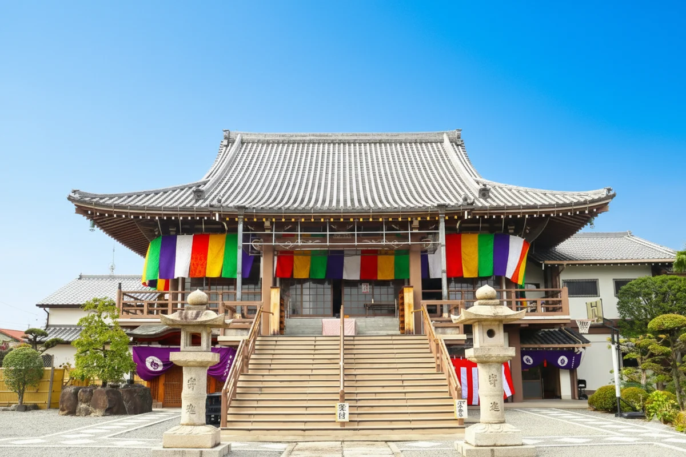
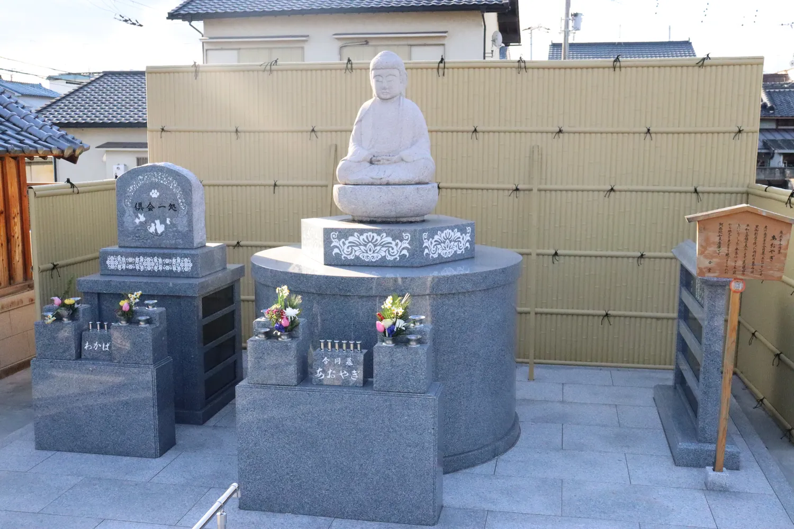
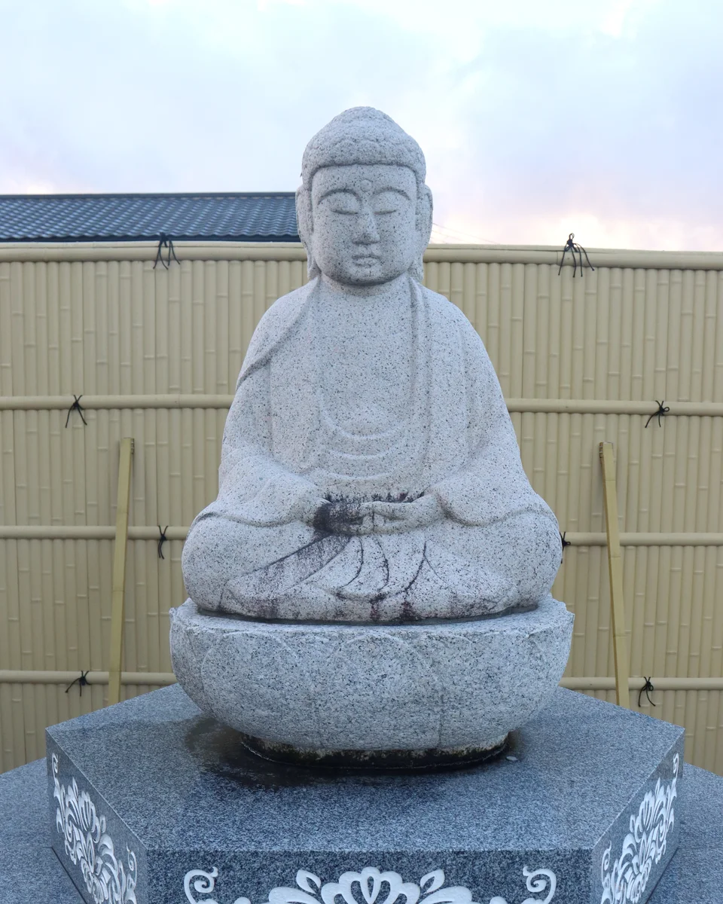
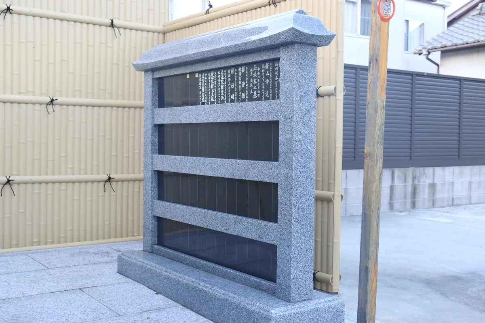
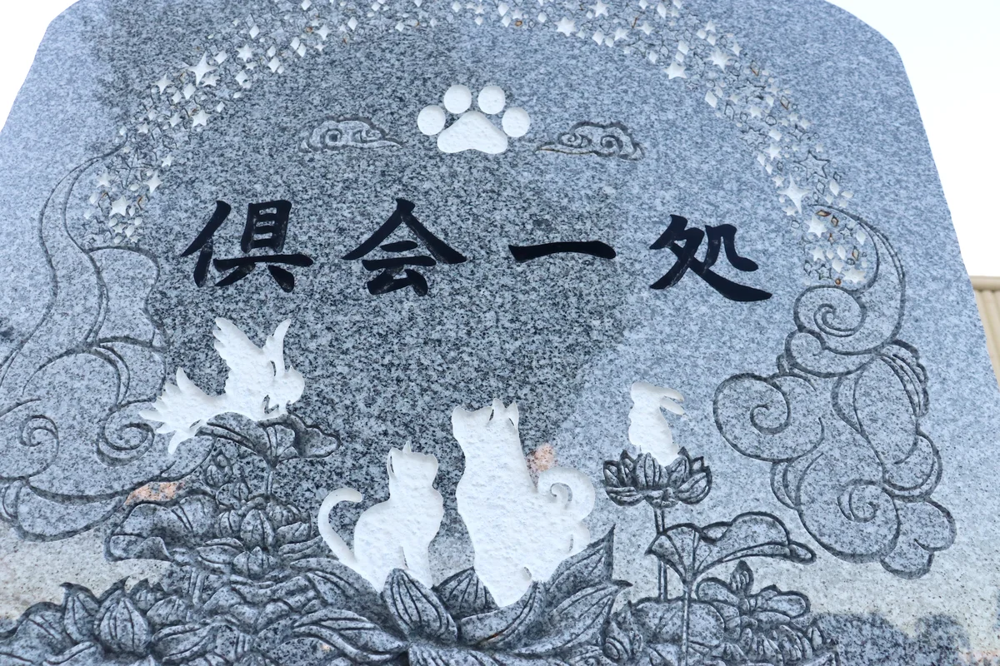
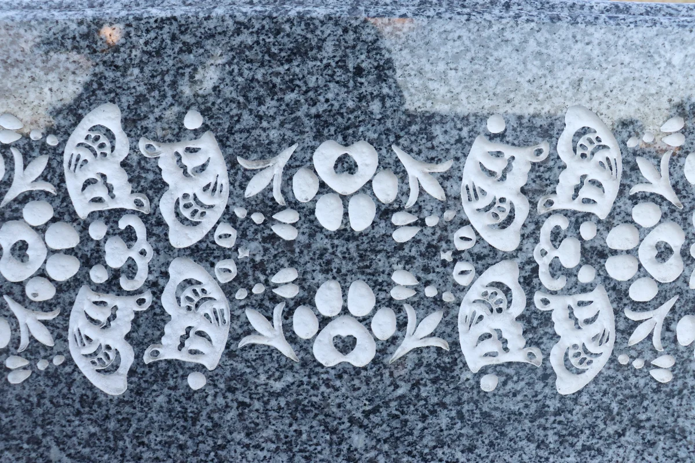
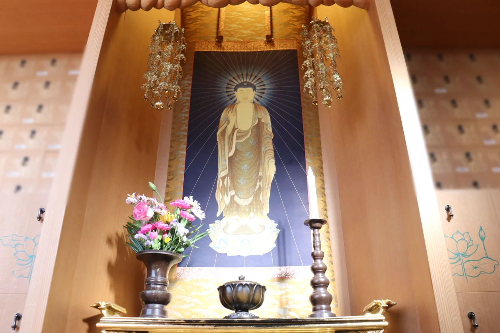

合同墓・納骨堂のご案内
今もお念仏の声がひびくお寺で、
大切な方のお骨をお守りします
550年、河内の地でご門徒の皆さまとともに歩んできた恵光寺です。
恵光寺でお骨をお預かりするということ
お墓や納骨の場所は、目に見えない仏さまのはたらきに出あう「窓口」です。お参りのたびに、亡き方とともに、み教えにふれるご縁をいただきます。

合同墓「あおやぎ」
「あおやぎ」の仏さま
「あおやぎ」におられる阿弥陀如来坐像は、200年にわたって萱振の町を見守ってこられた仏さまです。
仏さまが坐す台座は、まるい円柱のかたちをしています。円形の台座はめずらしく、そのまるい形は「平和」や「安穏」をあらわしています。角のない台座のように、どなたもへだてなく迎えとられていく。そんな願いのこもったお墓です。

これまでの宗派は問いません。
どなたでもお申し込みいただけます。
- 過去の宗派は問いませんこれまでの宗派やお寺とのご縁にかかわらず、お申し込みいただけます。ご門徒になる必要はなく、恵光寺の「信徒」としてお迎えします。
- ご法要は恵光寺が責任をもって納骨やご法要は、浄土真宗本願寺派のかたちで恵光寺がお勤めします。
- 境内に入ってすぐの場所にいちばんお参りしやすい場所にあり、足元も安心。車いすのままでもお参りいただけます。
- 年間の費用はかかりませんはじめにご志納をお納めいただくだけで、毎年の管理費はいりません。お墓を継ぐ方がいなくても、恵光寺がお守りします。
- 墓じまいのあとのお骨も墓じまいをしたあとのご先祖のお骨も、お納めいただけます。
- お名前を刻むプレートも納められた方のお名前を刻むプレートがあります。
- 生きたお寺の中で行事やお参りの人が行き交う境内で、大切な方のお骨をお守りします。


- ご志納（小さなお骨）
- 9万円〜
- 年間の費用
- かかりません
- 合同のご法要
- 毎年4月 第4土曜日
- お参りできる日時
- 毎日 8時〜17時
墓じまいやご葬儀を迎える前にご相談いただくと、お骨の分け方や手続きを落ち着いて決められます。どうぞお気軽におたずねください。
ペットの合同墓「わかば」

ともに暮らしたいのちも、
阿弥陀さまのお慈悲のなかに。
阿弥陀さまのお慈悲は、あらゆるいのちを分けへだてなく、愛おしく抱きとめてくださるはたらきです。そのはたらきのなかに、人間のいのちも、家族として暮らした動物たちのいのちもあります。
ペットの合同墓「わかば」は、合同墓「あおやぎ」の隣にあります。「わかば」の前で手を合わせるひとときが、ともに過ごした日々に感謝し、いのちのつながりを味わうご縁となります。
「わかば」に刻まれたもの
「わかば」には、犬や猫、うさぎ、鳥など、わたしたちのそばで暮らしてきた動物たちの姿が彫られています。その下の台座には、肉球や小さな足あとが並んでいます。ここに来ると、あの子の足音が聞こえてくるようです。

そして刻まれているのが「倶会一処（くえいっしょ）」の言葉です。『仏説阿弥陀経』に説かれる言葉で、「ともに一つところで会う」という意味です。阿弥陀さまのお浄土で、先にいった人とまた会わせていただく。浄土真宗のお墓によく刻まれてきた言葉です。
あらゆるいのちを分けへだてなく抱きとめてくださる阿弥陀さまのはたらきのなかで、ともに暮らしたいのちとも、またご縁がつながっていく。「わかば」は、その味わいをかたちにしたお墓です。
- ご志納（小さなお骨）
- 3万5千円〜
- お納めできるペット
- ワンちゃん、ネコちゃん、小鳥やうさぎ、モルモットなど。ともに暮らした大切な家族なら、どの子もお受けします
- お参りできる日時
- 毎日 8時〜17時
すべてのお骨を納める場合は金額が変わりますので、事前にご相談ください。
こんな方に
お墓を継ぐ方のことが気がかりな方
年間の費用はかからず、お墓を継ぐ方がいなくても恵光寺がお守りします。
これからのお寺とのご縁を結びたい方
宗派を問わず、恵光寺でご縁を結んでいただけます。
足腰に不安のある方
境内に車を停めて、すぐにお参りいただけます。
お墓のお引越しを考えている方
墓じまいのあとのお骨もお納めできます。墓じまいの前にご相談ください。
お申込みの流れ
- 1 お問い合わせお電話・LINEでご連絡ください。
- 2 見学・ご相談実際に見ていただき、ご事情をうかがいます。
- 3 お申込みお申込書にご記入いただきます。印鑑などをお持ちください。
- 4 納骨・ご法要浄土真宗本願寺派のかたちで、恵光寺がお勤めします。
納骨堂「遺徳堂」（ご門徒の皆さまへ）

恵光寺のご門徒の方を対象とした納骨堂「遺徳堂」です。ご利用の際は、恵光寺のご門徒になっていただきます。
合同墓との大きな違いは、室内にあることと、お骨がそのまま残ることです。くわしくはお寺へおたずねください。毎年の管理費はいりません。
よくあるご質問
Q. ほかの宗派でしたが、申し込めますか？
A. はい。これまでの宗派は問いません。納骨やご法要は、浄土真宗本願寺派のかたちで恵光寺がお勤めします。
Q. 申し込むと、恵光寺の門徒にならないといけませんか？
A. いいえ、ご門徒になっていただく必要はありません。お申し込みの方は恵光寺の「信徒」としてお迎えし、毎年の「永代供養墓 合同法要」などのご案内をお送りします。入檀料や、毎年の管理費・会費はいりません。
これを機に恵光寺とのご縁を深めたい方は、ご門徒としてお迎えすることもできます。
Q. 今あるお墓からお骨を移すこと（改葬）もできますか？
A. はい、お納めできます。改葬には、今のお墓のある市区町村での手続きや、今のお寺とのお話し合いが必要になります。また、受け入れ先となる恵光寺の受入証明書なども必要になりますので、墓じまいを始める前にご相談ください。混乱が少なく、スムーズに進められます。
Q. 後からお骨を取り出すことはできますか？
A. できません。「あおやぎ」・「わかば」は、お骨を土にかえすお墓です。お納めしたお骨はほかの方のお骨とともに土にかえっていくため、あとから取り出したり、お返ししたりすることはできません。お骨を手元にも残したい方は、納める前に分骨についてご相談ください。